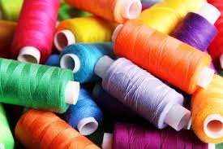
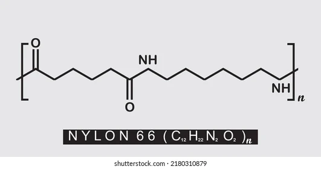
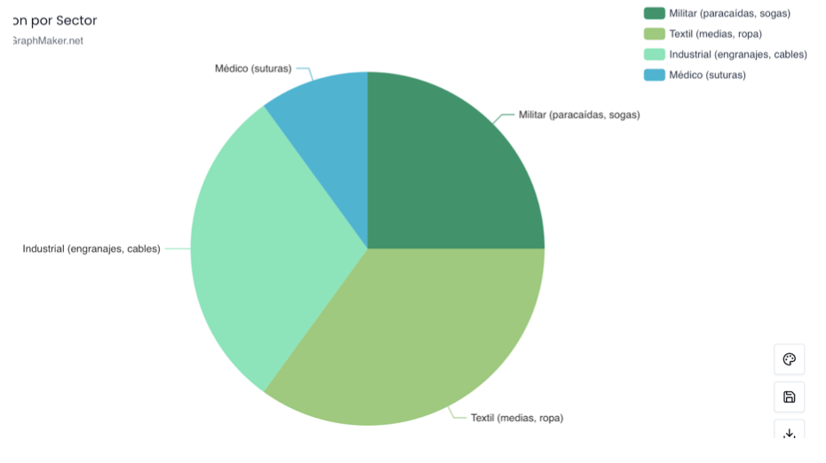

1. Características y Funcionamiento
- Alta resistencia a la tracción.
- Ligero, elástico y resistente a la abrasión.
- Resistente al moho, productos químicos y humedad.
- Puede hilarse como fibra o moldearse como plástico.
- Producción por polimerización de hexametilendiamina y ácido adípico (nylon 6,6).


2. Incidencia en Mercados
- EE.UU.: Monopolio inicial por DuPont; revolucionó la industria textil.
- Europa: Potenció la moda rápida tras la guerra.
- Asia: Japón desarrolló alternativas como el "Nylon japonés" en los años 50.
- Internacional: Presente en textiles, empaques, autopartes, electrónica y medicina.
3. Información Financiera y de Uso
- 1939: DuPont invirtió más de 27 millones de dólares en producción.
- 1940: 64 millones de pares de medias vendidos en EE.UU.
- WWII: Producción destinada a fines militares.
- Desde 1950s: Uso masivo en ropa femenina y productos de consumo.
- Producción global actual: Más de 5 millones de toneladas métricas anuales.
4. Publicidad
- Campaña "Better than silk!" para medias (1939).
- Uso de modelos y celebridades.
- Canales: Revistas, vitrinas, exhibiciones públicas.
- Estrategia: Marketing emocional (comodidad, elegancia).
- Durante la guerra: Publicidad patriótica “Nylon ayuda a ganar la guerra”.
5. Línea de Tiempo
1935: Síntesis del nylon por Wallace H. Carothers.
1938: Presentación pública en la Feria Mundial.
1939: Comercialización de medias de nylon.
1940s: Uso militar en paracaídas y cuerdas.
1950s: Masificación textil en ropa femenina.
Actualidad: Producción global para múltiples industrias.
6. Uso por Sector

7. Referencias Bibliográficas
- American Chemical Society
- Buderi, R. (1996). *The invention that changed the world*. Simon & Schuster.
- DuPont: History of Innovation
- Hounshell, D. A. (1988). *Science and corporate strategy*. Cambridge University Press.
- Smithsonian Institution
- Tobey, R. C. (1996). *Technology as freedom*. University of California Press.
- JSTOR